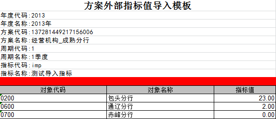

操作说明:
1.导入文件样式为图片所显示样式；
2.请点击弹出面板的‘浏览’选择要上传的本地文件，点击‘上传’开始上传所选文件；
3.系统会自动将上传文件名加上机构号和时间戳，如：方案目标认领模板.xls => 方案目标认领模板_3020_2012-12-01_15-01-01.xls。
注意事项:
1.必须为Excel文件,文件中数据应放在第一张工作表中；
2.文件中红线框对应的空白行,请不要删除,也不要填入数据；
3.文件中所有数据类型均为文本格式。